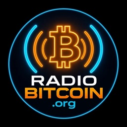
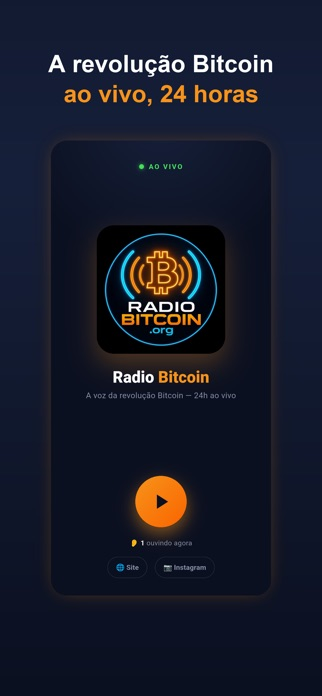
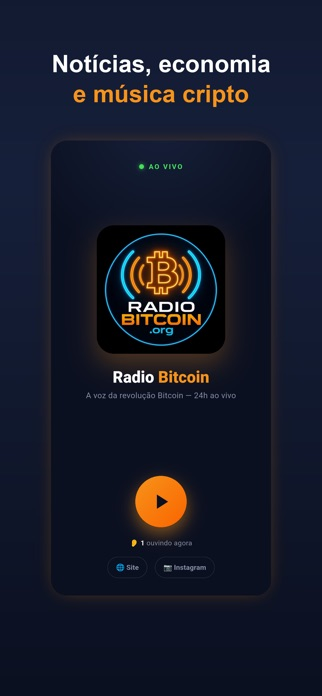
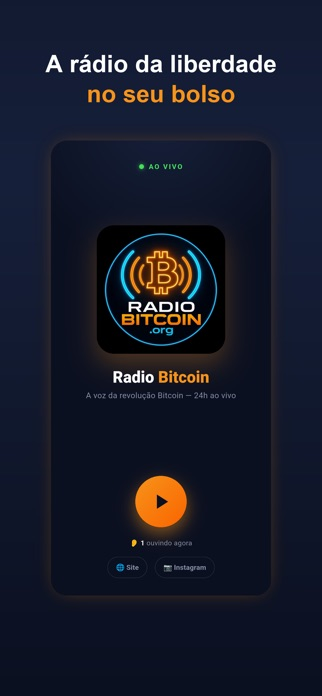

📻 Radio Bitcoin · app oficial

A voz da revolução Bitcoin,
24h no seu bolso.
Notícias do mercado cripto, economia, boletins e música ao vivo, direto no iPhone.
Continua tocando com o app em segundo plano e a tela bloqueada.
Baixar grátis na App Store
Android: em teste fechado no Google Play · quero testar · ou ouça agora no site



🔴
Ao vivo 24haperta o play e pronto
🔒
Tela bloqueadacontrole pela tela de bloqueio e Central de Controle
📈
Mercado criptoboletins de Bitcoin, economia e soberania
🎵
Música própriafaixas autorais em português, espanhol e inglês
Política de privacidade · Onde mais ouvir